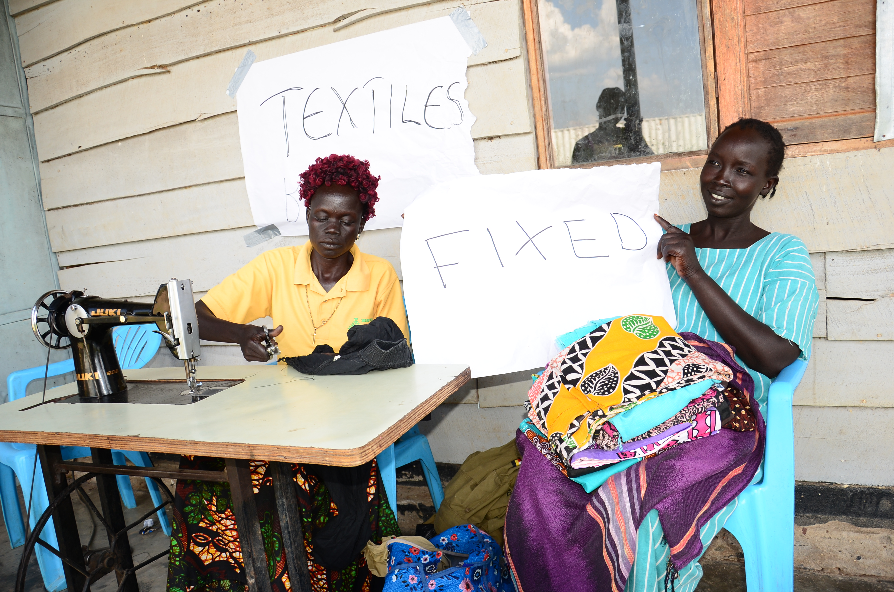

Activities Header
Activities text

Our Mission
Our mission is to connect communities digitally, while protecting the environment from global warming by using the available resources for self-reliance and sustainable development.

Our Vision
A transformed and committed society fully in control of their social economic well-being using the available resources to reduce poverty, building peaceful and prosperous communities.